Facility management and tactical field operations in Somnarak adhere to strict mathematical formulas, damage types, work affinities, and resonance clash rules.
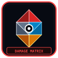
HAN ENERGY & DAMAGE
The 4 Damage Types: Physical (RED), Mental (WHITE), Corrosive (BLACK), and Pale (PALE).
VIEW DAMAGE MATRIX →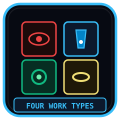
THE FOUR WORK TYPES
Instinct (Ferrehan), Insight (Viderehan), Attachment (Flerehan), Repression (Pugnahan).
VIEW WORK FORMULAS →SECC CLASSIFICATION
Threat rating hierarchy from T-01 AETHER up to catastrophic T-05 APOCRYPHA breach tiers.
VIEW RISK TIERS →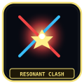
RESONANT CLASH RULES
Dice clash formulas, speed priority, coin flips, and stagger threshold calculation.
VIEW CLASH RULES →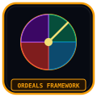
ORDEALS FRAMEWORK
Dawn, Noon, Dusk, and Midnight timed incursions invading facility floors.
VIEW ORDEAL WAVES →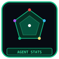
AGENT ATTRIBUTES & STATS
Resolve (HP), Resilience (SP), Composure (Success/Speed), and Justice (Attack/Evade).
VIEW STAT CHARTS →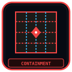
CONTAINMENT & SUPPRESSION
Coherence counters, escape conditions, chamber meltdown timers, and suppression squads.
VIEW OPS PROTOCOL →DEFAULT STANDARD EQUIPMENT
Standard Directorate issue batons, tactical suits, and shock protection kits.
VIEW STANDARD ISSUE →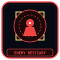
ENEMY BESTIARY
Tactical profiles of Outskirt Distortions, Rogue Operatives, and Wound Walkers.
VIEW BESTIARY ROSTER →FRACTURE & THERAPY
Panic states (Murder, Suicide, Wander, Shutdown) and psychological rehabilitation.
VIEW THERAPY PROTOCOLS →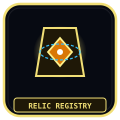
HAN RELIC REGISTRY
Master catalog of recovered pre-Cataclysm Han artifacts and anomalous tools.
VIEW RELIC CATALOG →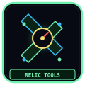
HAN RELICS & TOOLS
Deployable field relics providing passive facility buffs and extraction boosts.
VIEW TOOL MECHANICS →M.A.W. EQUIPMENT SYSTEM
Extraction formulas, Sync Ratios, equipment loss penalties, and resonance tuning.
VIEW SYSTEM RULES →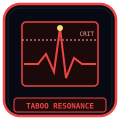
TABOO RESONANCE MECHANICS
Sanction build-up meters, retribution waves, and Giltong enforcement triggers.
VIEW TABOO RULES →When containing a Sorrow Entity, agents perform one of four standardized work routines to harvest Han-flux while maintaining the entity's Coherence Counter. Each work type interacts with specific agent attributes:
| Work Routine | Han Protocol Name | Primary Scaling Stat | Operative Procedure | Failure Consequence |
|---|---|---|---|---|
| Observation | Pugnahan (투쟁한) | Resolve (체력/HP) | Direct sensory monitoring, physical threat deterrence, and bio-metric vital recording. | Physical trauma and Grudge damage backlashes against the operative. |
| Extraction | Ferrehan (수렴한) | Resilience (정신력/SP) | Attaching hydraulic needles to draw liquefied Han flux into facility storage batteries. | Lament damage; severe mental exhaustion and auditory hallucinations. |
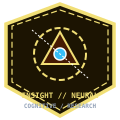 Insight |
Viderehan (통찰한) | Composure (숙련도) | Environmental conditioning, chamber optimization, and cognitive communion. | Void damage; reduction in work efficiency and potential chamber contamination. |
| Restraint | Flerehan (억제한) | Justice (정의/속도) | Imposing magnetic suppression fields, sensory deprivation, and acoustic dampening. | Coherence Counter reduction; triggers immediate breach alerts if zeroed. |
As the daily energy quota increases, unrefined Han seepage precipitates systemic crises known as Ordeals at specific time milestones:
| Ordeal Phase | Color Spectrum | Trigger Threshold | Manifestation Form | Recommended Suppression Strategy |
|---|---|---|---|---|
| Dawn (새벽) | Green / Amber / Crimson | 25% Daily Quota | Small swarms of crystalline parasites and malfunctioning maintenance drones. | Fast level I-II operatives with standard kinetic sidearms. |
| Noon (정오) | Cyan / Violet | 50% Daily Quota | Heavily armored Han seep golems and sensory disruption pillars. | Dedicated strike teams equipped with Lament & Grudge M.A.W. gear. |
| Dusk (황혼) | Crimson / Blood Gold | 75% Daily Quota | Colossal mobile obelisks that drain surrounding containment counters. | Full department mobilization; prioritize destroying obelisk cores immediately. |
| Midnight (자정) | Obsidian / Pure Pale | 100% Daily Quota | Catastrophic apocalyptic manifestations capable of facility-wide wipes. | Deployment of APOCRYPHA-grade M.A.W. specialists and Echo-Core direct intervention. |